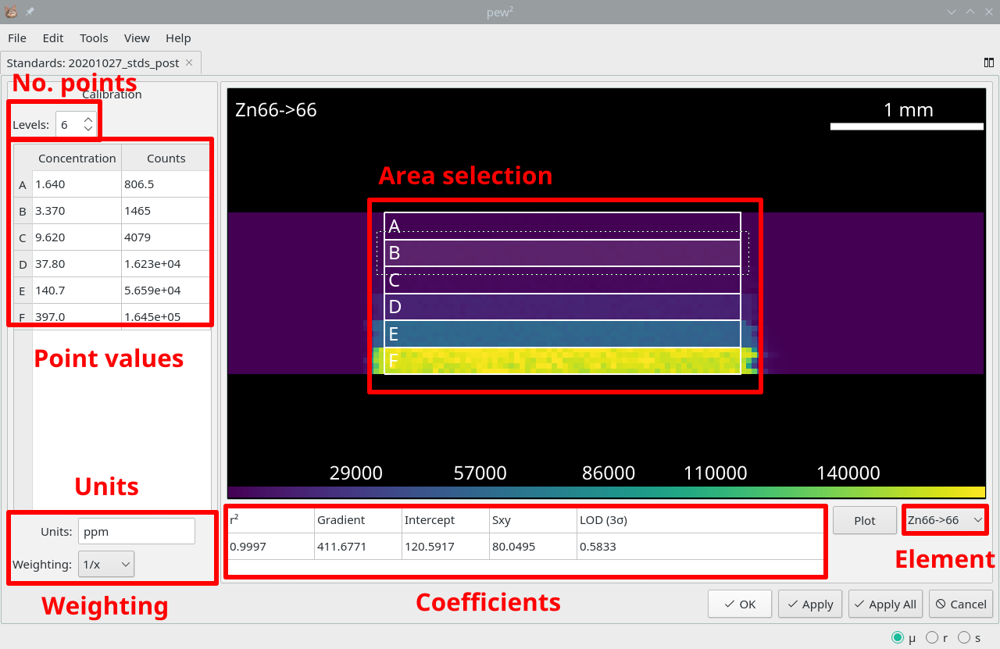

Standards Tool¶
Tools -> Standards Tool
Opening the Standards Tool will load the active laser image, allowing the generation of a calibration curve from external standards. For easy of use data should be collected line-by-line with all similar calibration levels in adjacent lines.
The number of calibration levels and regions is selected using the Levels box and will reset region positions. Calibration regions can be moved or resized using the mouse and multiple regions can be moved or resized by first selecting with Shift or Ctrl.
Clicking Apply will apply the calibration to the current image while Apply to All will add the calibration to all open images.

Calibration standards loaded into the Standards Tool. Red highlights indicate important controls.¶
See also
- Calibration Dialog
Dialog for modifying calibrations.
- Calibration Curve
Dialog for displaying calibration curves.